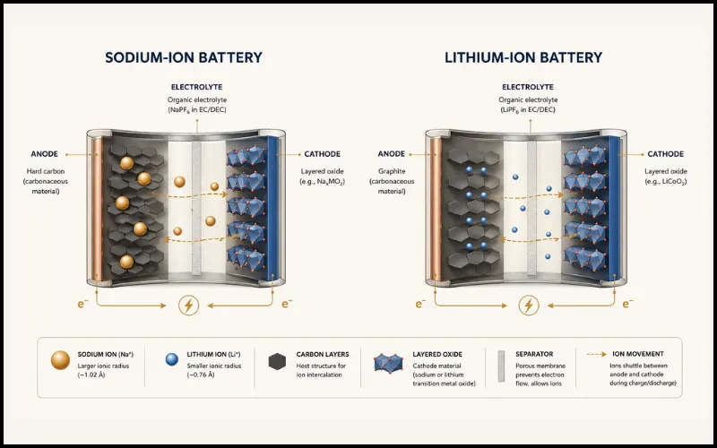

For thirty years, lithium-ion batteries were the only serious player in the energy storage game. They powered everything from your phone to the electric vehicles now crowding city roads. But lithium has a problem — it's rare, expensive, and increasingly fought over. Enter sodium: the element that makes your food salty and your oceans blue. In 2026, sodium-ion batteries have crossed from lab curiosity to mass production reality.
A sodium-ion battery is a rechargeable battery that uses sodium ions instead of lithium ions to store and release energy. It works on the same electrochemical principle as a lithium-ion battery but uses sodium — an element 1,000 times more abundant than lithium and far cheaper to source. While current sodium-ion cells carry slightly less energy per kilogram, they outperform lithium in cold weather, charge safety, and supply chain resilience. In 2026, CATL and BYD have begun mass-producing sodium-ion batteries for EVs and grid storage, marking the technology's commercial breakthrough.
This isn't incremental progress. The world's largest battery manufacturer, CATL, just secured the biggest single sodium-ion battery order in history — 60 GWh — and confirmed mass-production deployment across passenger vehicles, commercial trucks, battery swapping, and energy storage. Their chief scientist declared that manufacturing bottlenecks have been resolved. Meanwhile, the global market for sodium-ion batteries is projected to surge from 70 GWh today to 400 GWh by 2030. That's explosive by any measure.
1 How Do Sodium-Ion Batteries Actually Work?
A sodium-ion battery stores energy by moving sodium ions back and forth between two electrodes — an anode and a cathode — through a liquid electrolyte. When you charge the battery, sodium ions travel from the cathode to the anode. When you discharge it (use the stored energy), they travel back. This is identical in principle to how a lithium-ion battery functions — the only fundamental difference is the ion doing the travelling.

The engineering challenge is that sodium ions are larger and heavier than lithium ions, which means traditional lithium-ion electrode materials don't work well with sodium. Scientists had to develop entirely new cathode and anode materials — like layered metal oxides and hard carbon — that can accommodate sodium's bigger footprint. That materials engineering challenge is what kept sodium-ion batteries in the lab for four decades after lithium-ion went commercial.
The same principle that lets your phone battery charge also works for sodium ions — but engineering new electrode materials that welcome sodium's larger size took decades of materials science research. That problem is now largely solved.
Today, three main cathode chemistries are commercially viable: layered metal oxides (used by CATL), Prussian blue analogs, and polyanionic compounds (including the sodium iron pyrophosphate or NFPP variant favoured for grid storage). Each has different trade-offs in energy density, cycle life, and cost — the same way NMC, LFP, and NCA lithium chemistries each serve different applications.
2 Why Sodium and Not Just More Lithium?
Lithium has a supply problem. It is found in meaningful concentrations in only a handful of countries — Chile, Australia, and Argentina dominate global supply. This creates geopolitical dependencies, price volatility, and sustainability concerns around lithium brine extraction. Sodium, by contrast, is everywhere: in seawater, salt flats, and rock deposits across every continent. It is over 500 times less expensive to process than lithium carbonate.
CATL's Naxtra sodium-ion pack retains 90% of usable capacity at -40°C — a temperature at which lithium-iron-phosphate batteries can lose 30–40% of their range. This makes sodium-ion batteries a strong candidate for cold-climate EVs, industrial equipment, and grid storage in regions with extreme winters.
CATL's latest BESS-focused sodium-ion cell showed no thermal runaway in nail penetration, crushing, and overcharging tests — three scenarios that cause catastrophic failure in many lithium chemistries. This matters enormously for utility-scale grid storage where a single runaway event can destroy an entire installation.
CATL's grid-storage sodium-ion cell achieves over 15,000 charge cycles with 80% capacity retention. For context, most home lithium-iron-phosphate batteries are rated for 3,000–6,000 cycles. Longer cycle life directly reduces the cost per kilowatt-hour of stored energy over a system's lifetime.
Fast charge in the cold: CATL's sodium-ion pack charges at temperatures as low as -30°C — a practical advantage for EV owners in North India's winters or high-altitude regions where lithium batteries become sluggish.
3 Who Is Building Sodium-Ion Batteries Right Now?
China leads this revolution decisively, controlling over 60% of the global market and holding more than 95% of announced capacity through 2030. But the race is spreading.
CATL's Naxtra sodium-ion line launched in April 2025 for passenger vehicles and heavy trucks (175 Wh/kg, -40°C to 70°C operating range). In February 2026, CATL and Changan unveiled the world's first mass-production passenger EV with sodium-ion batteries — the Changan Nevo A06. CATL describes sodium and lithium as a "dual-star" strategy: the two chemistries coexist rather than compete, each optimised for different use cases.
BYD began construction of its first dedicated sodium-ion battery plant in January 2024. Their R&D sodium-ion cells have achieved 200 Ah capacity with a voltage range of 800V–1400V and over 10,000 cycles — numbers targeting utility-scale grid storage rather than just vehicles. BYD's sodium-ion blade cell architecture adapts the same structural battery approach that made their LFP blade battery famous.
Peak Energy is the leading US sodium-ion grid storage developer, having supplied the world's largest sodium-ion project at 100 MW/200 MWh. They have signed a commercial agreement with Jupiter Power for a 180 MW/720 MWh BESS, with potential for 4 GWh in additional orders. Their bet: sodium-ion wins on grid economics, where cycle life and safety matter more than energy density per kilogram.
"Sodium-ion batteries offer broad potential for extreme temperatures and energy storage applications. LFP is nearing its theoretical energy density limit — it's critical to focus now on what comes next."
— Wu Kai, Chief Scientist, CATL · Equipment Powerhouse Forum, May 2026
4 What Does This Mean for India?
India's EV ambitions — and its target of 500 GW of renewable energy by 2030 — both depend heavily on battery storage. Right now, India imports nearly all its lithium from Australia and Chile, making the energy transition geopolitically and economically vulnerable to external supply chains.
Sodium is abundant domestically in India — in salt deposits, seawater, and mineral sources across multiple states. If sodium-ion batteries reach cost parity with lithium-iron-phosphate (which CATL targets within three years), Indian manufacturers could build more affordable EVs and grid storage systems using locally sourced raw materials, reducing import dependence and enabling genuinely domestic clean energy infrastructure.
India's two-and-three-wheeler EV market — by volume, the world's largest — is extremely cost-sensitive. Sodium-ion batteries, with their projected lower cost at scale, cold-weather charging capability, and improved safety, are a near-perfect fit for urban two-wheelers in North India where winters are harsh and affordability is paramount. The technology is not waiting for India to notice. Chinese-built sodium-ion EVs are already on the road. The question is whether India builds its own supply chain or imports the batteries too.
Watch this space: Indian battery manufacturers like Macsen Labs are already developing sodium-ion cathode materials. The PLI scheme for advanced chemistry cells could be extended to sodium-ion production — a move that would dramatically accelerate domestic capability.
5 What Are the Challenges — Is It All Good News?
Sodium-ion batteries are not a silver bullet. Their current energy density — around 160–175 Wh/kg — is lower than the best lithium-iron-phosphate cells (180–200 Wh/kg) and well below NMC lithium (250–300 Wh/kg). For long-range premium EVs and aviation applications, lithium still wins. CATL's 600 km range target for sodium-ion is aspirational — it requires energy density improvements not yet achieved at commercial scale.
Today's sodium-ion batteries are best suited for short-range EVs, urban transport, grid storage, and industrial applications. For premium long-range EVs and consumer electronics, lithium-ion — especially NMC and NCA chemistries — will remain dominant for several more years. The "dual-star" approach CATL describes is not marketing spin; it reflects a genuine complementarity.
Cost parity also hasn't fully arrived yet. While sodium raw materials are far cheaper than lithium, manufacturing sodium-ion cells at scale requires new electrode materials, new electrolyte formulations, and new production lines. Current sodium-ion cell costs are not yet meaningfully cheaper than LFP at the cell level — the advantage will arrive as production scales. The 400 GWh by 2030 projection assumes that scaling happens smoothly, which depends on continued manufacturing investment and no major technical setbacks.
The Bigger Picture: Why This Matters Now
The sodium-ion story isn't about replacing lithium overnight. It's about something more interesting: for the first time, the energy storage industry has a credible, scalable alternative to a single dominant chemistry. That changes the geopolitics of clean energy. It changes who can build EVs affordably. It changes which regions can achieve genuine energy independence. The elements you need are no longer concentrated in a few mines in a few countries — they're in the ocean, in rock, in the ground beneath most of the world's feet.
We are at the beginning of a dual-chemistry energy world. Sodium-ion won't dethrone lithium — but it will expand the frontier of where energy storage can go, at what cost, and for whom. For rapidly growing economies building their EV and grid storage infrastructure right now — including India — this technology arrives at exactly the right moment. Stay curious — the battery revolution is just getting interesting.
A sodium-ion battery stores and releases energy by shuttling sodium ions between two electrodes — an anode and a cathode — through an electrolyte. It works on the same fundamental principle as a lithium-ion battery, but uses sodium instead of lithium. Because sodium is extremely abundant and cheap, these batteries are expected to cost significantly less at scale.
Sodium-ion batteries are not universally better — they currently have a lower energy density than lithium-ion, meaning they store less energy per kilogram. However, they outperform lithium-ion in cold weather, charge safety, raw material cost, and supply chain resilience. They are especially well-suited for grid energy storage and entry-level electric vehicles where energy density is less critical.
The leading manufacturers are CATL and BYD in China. CATL launched its Naxtra sodium-ion battery series for passenger vehicles and heavy trucks in 2025, and confirmed mass production deployment in 2026. BYD is building a large sodium-ion battery plant targeting EVs and grid storage. In the US, Peak Energy is deploying grid-scale sodium-ion storage systems.
India imports most of its lithium from Australia and Chile, making its EV and storage ambitions vulnerable to global supply chain disruptions and price volatility. Sodium is vastly more abundant domestically. If sodium-ion batteries reach cost parity with lithium-iron-phosphate — which CATL targets within three years — Indian manufacturers could build more affordable EVs and grid storage systems using locally available raw materials.
Current sodium-ion battery packs achieve around 175 Wh/kg energy density, enabling driving ranges comparable to entry-level lithium-iron-phosphate EVs. CATL's Naxtra battery is already powering the Changan Nevo A06 passenger car. CATL has stated its goal is to reach 600 km of driving range with future generations of sodium-ion cells within the next few years.